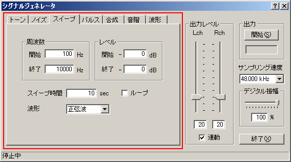

DSSF3 > RA > リファレンス > シグナルジェネレータ

| 項目 | 説明 | |
| 周波数 | 開始 終了 |
スイープの開始周波数と終了周波数を設定します。開始周波数より終了周波数が高い場合は音程が上昇する方向に、開始周波数より終了周波数が低い場合は音程が下降する方向にスイープします。 |
| レベル | 開始 終了 |
スイープの開始レベルと終了レベルを設定します。開始レベルより終了レベルが大きい場合は音量が上昇する方向に、開始レベルより終了レベルが低い場合は音量が下降する方向にスイープします。開始レベルと終了レベルが等しい場合は、出力レベルは変化しません。 |
| スイープ時間 | スイープの速度を入力します。入力値の単位は1オクターブあたりの秒数となります。 | |
| ループ | 通常は設定した開始周波数から終了周波数までスイープして出力を終了しますが、ここをチェックすると停止ボタンをクリックするまで繰り返し実行されます。 | |
| 波形 | 出力音の波形を選択します。 | |
DSSF3 > RA > リファレンス > シグナルジェネレータ